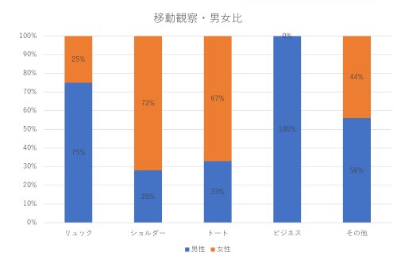

移動観察:神奈川大学みなとみらいキャンパスからはまみらいウォークまで（徒歩10分）
定点観察:はまみらいウォーク（約20分間）
路上観察
観察内容
みなとみらいを歩く人々はどのようなバックを使っているか、その男女比を観察する。観察経路・場所・時間
観察日時
2023年10月17日 移動観察:14時～14時15分 定点観察:14時15分～14時35分観察方法
スマホとカウンターを使って調査する観察結果
移動観察
※その他＝手ぶら、ハンドバック等

定点観察

結果から気づいたこと
- 全体的にリュックを使っている人が多い。その中でも男性のほうが女性と比べてかなり多い
- ショルダーバックはトートバックより多く、二つとも全体的に女性のほうが多い
- ビジネスバックを使う女性はいなかった。
- 手ぶらの人が以外にも多かった。
考察
リュックが多い理由リュックサックがほかのバックと比べて多くの人が使う理由としていくつか挙げられる。一つ目は、手が自由に使えられるからだと考えられる。両手が自由に使えるため、 移動中にほかのモノを持ったり、作業するのに便利である。二つ目は、荷物の重さを背中に均等に分散するため、移動が楽になる。ほかにも機能性や安全性といった面で ほかのバックと比べ、優れているからだと考えられる。また、なぜ男性は女性より多くリュックを使われるのか考えてみると、文化的、社会的な要因が影響されており、 その中でも一つ上げるとしたら、ファッション面で男性のほうが、カジュアルな要素が好まれる傾向があるからだと考える。
ショルダーバックとトートバック
ショルダーバックがトートバックと比べて多い理由の一つとして両手が使えられるからだといったことが挙げられる。また、なぜ女性のほうが男性より、ショルダーバックや トートバックを使うのか考えてみると、様々なファッションスタイルに合わせやすいからだと考えられる。また、女性は様々な小物を持ち歩く傾向があり、取り出しやすいこれらのバックを 使うからだと考えられる。
手ぶらな人ば多い理由
手ぶらだったのはすべてスーツを着ていたため調べて時間帯は、お昼休憩中で食事などに出かけていたからだと考えられる。